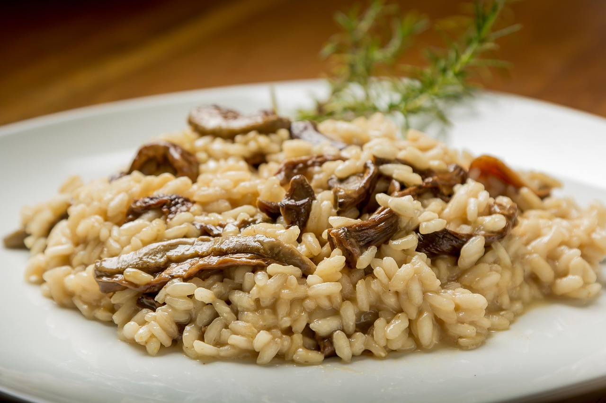
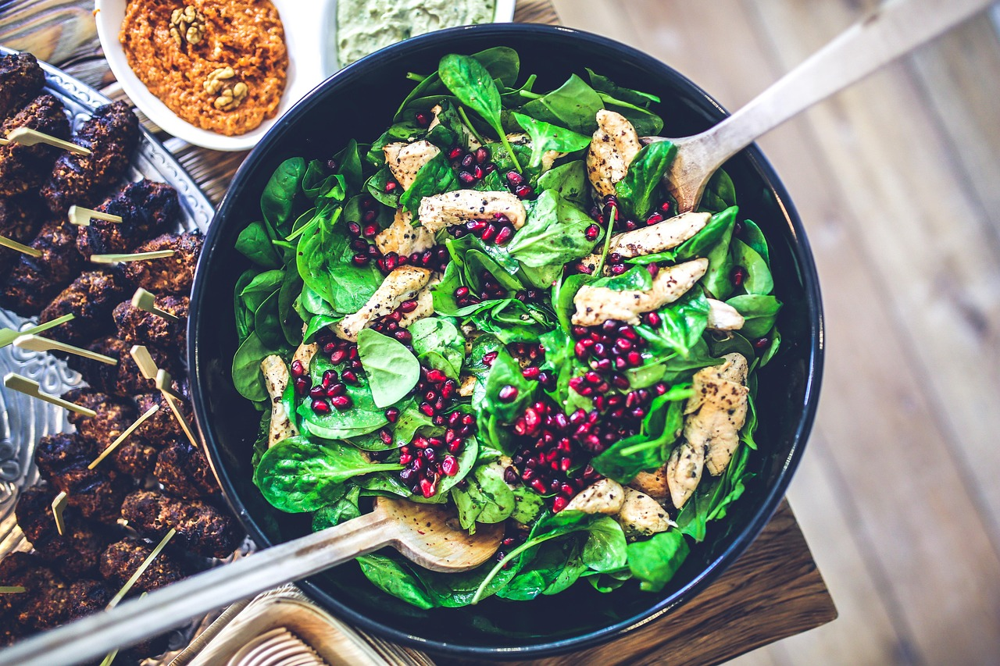

Un jugoso filete de res de corte premium, marinado en una reducción de vino tinto con hierbas aromáticas y ajo, asado a la perfección para conservar su suavidad y sabor. Acompañado de un puré cremoso de raíces (zanahoria, betabel y papa) y una guarnición de espárragos salteados al ajillo. Este plato es una combinación de elegancia y rusticidad, ideal para los amantes de la carne.
Q175

Un filete de salmón fresco, glaseado con una mezcla de miel, mostaza Dijon y jugo de limón, horneado hasta obtener una textura crujiente por fuera y tierna por dentro. Servido sobre una cama de quinoa especiada con cúrcuma y acompañado de vegetales asados (calabacín, pimiento y cebolla morada). Un plato ligero pero lleno de sabor, perfecto para quienes buscan una opción saludable y deliciosa.
Q180

Un risotto cremoso y sedoso, preparado con arroz Arborio, caldo de vegetales y una mezcla de champiñones silvestres salteados (portobello, shiitake y cremini). Aromatizado con trufa negra y terminado con un toque de queso parmesano y perejil fresco. Este plato es una experiencia gourmet que combina la riqueza de los sabores naturales con un toque de lujo.
Q150
Un plato fresco y lleno de sabor, ideal para quienes buscan una opción ligera pero satisfactoria. Jugosos trozos de pollo a la parrilla, marinados con hierbas provenzales y un toque de limón, se combinan con espinacas frescas, queso de cabra desmenuzado, nueces tostadas y arándanos secos. Todo se sirve con un aderezo casero de miel, mostaza Dijon y vinagre balsámico, que aporta un equilibrio perfecto entre dulce y ácido. Una ensalada que es tan nutritiva como deliciosa, perfecta para disfrutar con la vista hermosa del restaurante.
Q125
